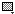

This set of three menus controls various settings that affect the rest of the tools.
 Line Thickness Normally the lines drawn have a width of one pixel. If you wish to change this, click and select a new thickness (up to a maximum of eight pixels). The pencil, eraser, rectangle, oval, line and polygon tools are affected by this setting.
Line Thickness Normally the lines drawn have a width of one pixel. If you wish to change this, click and select a new thickness (up to a maximum of eight pixels). The pencil, eraser, rectangle, oval, line and polygon tools are affected by this setting.
 Anti-aliasing Lines and curves normally look jagged on the screen due to the limited dimensions of pixels. Anti-aliasing allows the use of intermediate values so that objects drawn have a smoother appearance. The line, polygon and oval tools are affected by this setting.
Anti-aliasing Lines and curves normally look jagged on the screen due to the limited dimensions of pixels. Anti-aliasing allows the use of intermediate values so that objects drawn have a smoother appearance. The line, polygon and oval tools are affected by this setting.
 Fill Objects drawn on the screen are normally hollow, their "insides" are transparent and show through what was previously in the drawing. Enabling this option fills the center portion with the design selected in the pattern swatch (see below). The rectangle, oval and polygon tools are affected by this setting.
| This control allows you to select a motif to fill various shapes with. Simply click on it and select one of the 22 patterns that are shown. The colors of the pattern are determined by the foreground and backgroudn colors. |
|
This control allows you to select the foreground (upper left square) and background (lower right square) colors to be used when drawing. Simply click on the color you wish to change, and either use the standard system color picker (for 32-bit icons) or the palette which pops up to choose a new color. The color swatch also provides two shortcuts, one for swapping the foreground and background colors (with the key shortcut 'X') and another for resetting the colors to the default, black and white (keyboard shortcut 'D'). A more versatile way to select colors is to use the colors palette. |